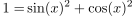
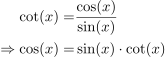
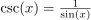
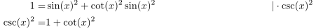

Trigonometrische Identität des Kotangens und Kosekans
1. Satz
Für  gilt:
gilt:
 1
1
2. Beweis
Aufgrund des trigonometrischen Pythagoras gilt:

2
Durch Definition des Kotangens und Kosekans gilt:

3
Eingesetzt in oben ergibt und aufgrund der Definition des Kosekans  folgt

4